条材
条材
条材で定義される部材（ロンジ、スチフナ、フレーム、ビーム、ピラー等）を作成します。
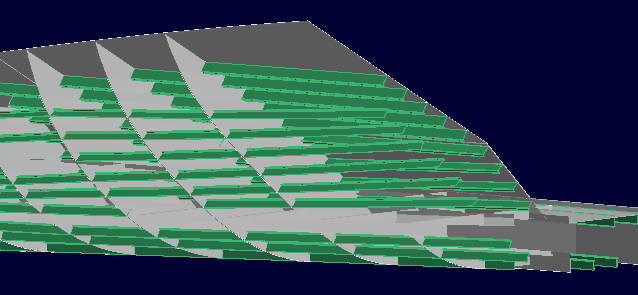  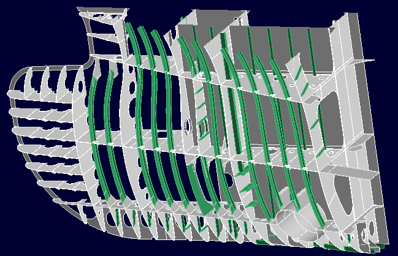
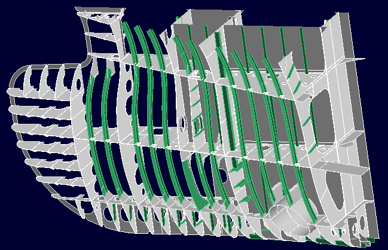
操作方法
パラメータを入力すると作成形状がプレビュー表示されます。形状の確認後、OKボタンで実行します。
パラメータ
- 取付方法
以下の取付方法があります。
- 取付線指定
条材の取付線となる線を指定して作成します。取付面上に取付線がない場合は取付面上に投影します。投影方向を指定することもできます。
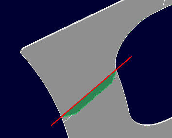 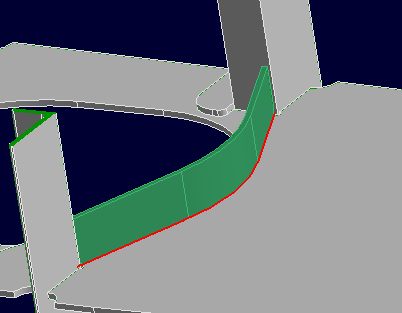
- 基準面指定
基準面と取付面との交線を取付線として条材を作成します。
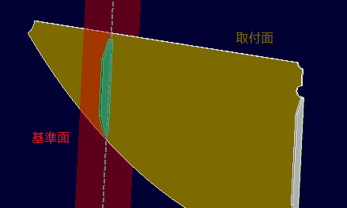 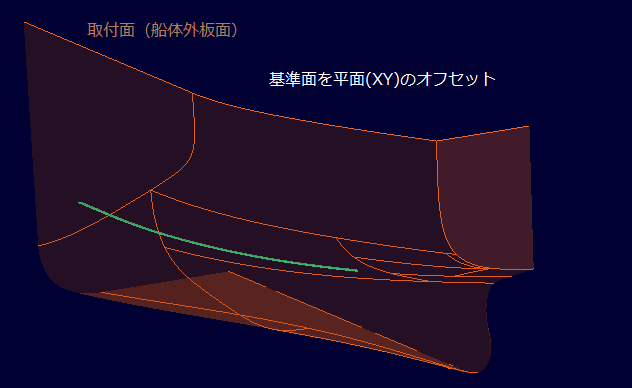
- 取付線指定+取付方向線指定
条材の取付線と条材の取付方向を示す直線を指示して作成します。

- 元要素指定
条材を元要素に指定して、その取付線、取付方向を利用して条材を新たに作成します。断面形状や、端部形状を新たに指定することができます。
全体で定義したロンジ（分割したもの、コピーしたものも可)から実際に製作する部材を作成する場合などに使用します。
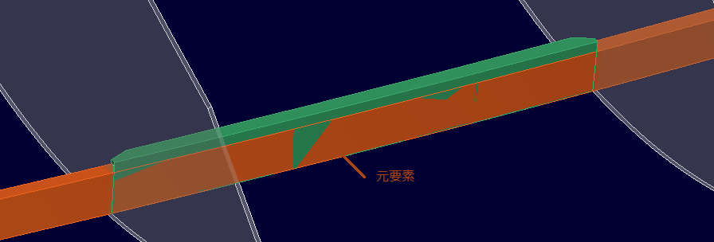
- 取付線指定
- 形状
- フェイス角度設定
ビルトアップを断面として選択した場合、フランジ部分のウェブ部分に対する角度を-90°から90°の範囲で指定することができます。
- 取付線(取付線指定,取付線指定+取付方向線指定)
条材を取り付ける線を選択します。(複数可）
取付線指定の場合、スケッチ線を選択した場合はデフォルトでそのスケッチ平面の法線方向、そうでない場合は取付面も指定する必要があります。その場合デフォルトではその取付面の法線方向に作成します。 - 基準面(基準面指定)

取付基準となる平面（およびそのオフセット）を指定します。
- 取付面(取付線指定,基準面指定)
条材を取り付けるフェイスやシートを選択します。(複数可）
- 取付線の結合トレランス(取付線指定,基準面指定)
条材の取付面上に作成される取付線の結合トレランスを指定することができます。
指定しない場合は、常に結合された状態で条材が作成されます。 - 板逃方向

条材の取付位置の板逃を指定します。デフォルトでは板逃げの方向は条材の取付方向からみて、端部１から端部２の方向の右側になります。


モールド位置は平面上に取り付けられない場合は無視されます。
- 設定
- アングル方向反転
形鋼のアングル方向を反対にします。
- 取付方向反転
条材の取付方向を反対側にします。
- 取付線の境界を基準に(取付線指定)
取付線が曲線の場合にその境界線の接線を取付線として作成します。(取付線として選択した線の両端を結んだ直線と平行で、取付線に接する線を取付線とします。)
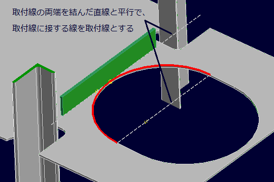 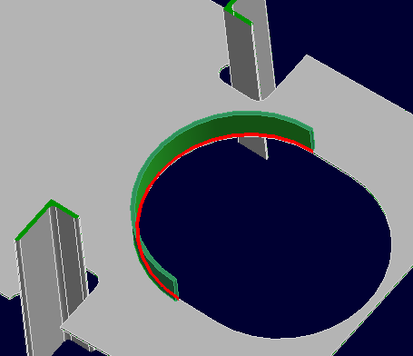
- 取付線のみで端部隙量を計算
端部要素として平面や面を選択した場合で、端部形状がSやNのようなノーマルに立ち上がる場合の端部の隙量の求め方を設定します。チェックを入れると取付位置のモールド線のみで隙量をとります。そうでない場合は条材の板厚、高さをみて隙量を計算します。
- アングル方向反転
- 投影方向指定(取付線指定)
取付線を取付面に投影する方向を指定します。(方向入力)
- 取付方向設定(取付線指定,基準面指定)
- デフォルト
取付面を指定した場合はその法線方向へ(曲面の場合はその取付線上での各法線方向となりひねりが入ります。)、そうでない場合でスケッチ線が取付線の場合はスケッチ平面の法線方向を取付方向とします。
- 基準平面内
基準面指定を指定した場合はその面内の方向へ、取付線指定で直線を選択し、かつ投影方向を指定した場合にはその平面内を取付方向とします。
- 取付角度指定
取付線上の各位置での取付方向を角度で指定します。角度の指定位置は指定軸を法線とする平面と取付線の交点、角度は指定軸からの角度を指定します。
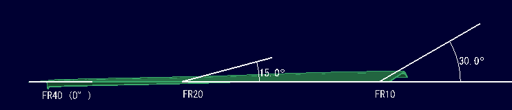
- 角度定義位置指定方向
取付位置を指定する平面の法線方向を指定します。(方向入力)
- 角度指定基準方向
角度を指定する基準軸方向を指定します。。(方向入力)
- 取付方向指定
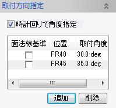
各行で角度指定位置、指定角度を設定します。行の追加、削除は下部のボタン（追加、削除）で行います。
値は各欄のクリックで編集することができます。- 時計回りで角度指定
角度を軸上でどの向きに設定するかを指定します。
- 面法線基準
チェックをいれると、指定の基準軸からではなく指定位置での面法線を基準に+,-の角度のオフセットを指定します。
いれない場合は指定基準軸方向からの角度になります。 - 位置
指定軸上の位置を指定します。数値や変数で設定します。
- 時計回りで角度指定
- 角度定義位置指定方向
- デフォルト
- 取付角度指定(取付線指定,基準面指定)
取付方向を指定角度変更します。取付線が直線となる場合にのみ有効です。
- 取付方向指定(取付線指定,基準面指定)
取付方向を指定します。(方向入力)取付線が直線となる場合にのみ有効です。
- 端部1,2


条材端部の形状を設定します。(ダイアログの入力方法)
端部の位置は要素(点、フェイス、シート、基準線),または平面(平面入力)で設定します。
(形状一覧)
- 端部1,2スカラップ(オプション)

条材端部にスカラップを設定します。(ダイアログの入力方法)
(形状一覧)